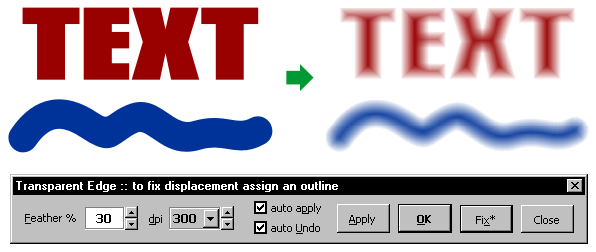
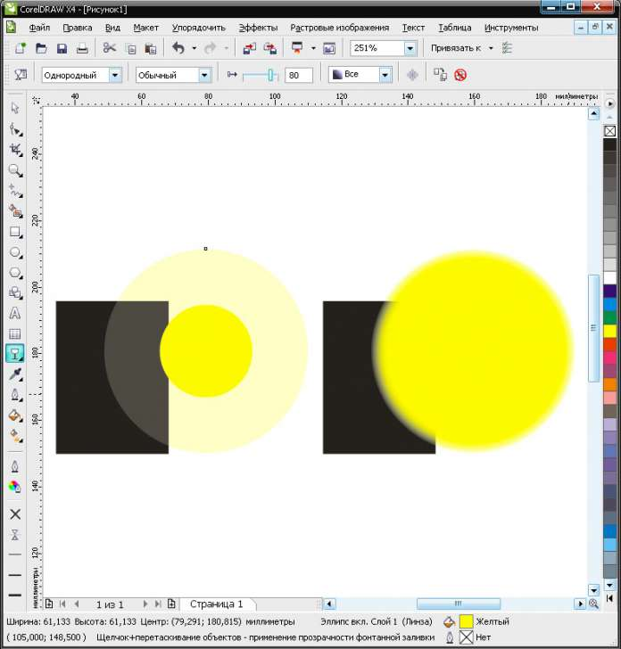
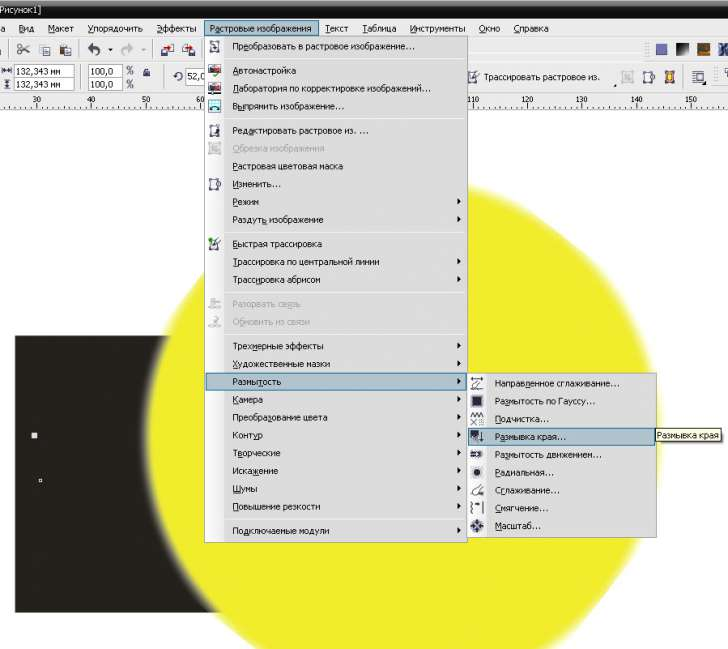

прозрачность в Кореле
stasys / 18.12.2008, 15:40/00:41
Форум:
то ли я не могу сообразить, как это делается, то ли в Кореле это не предусмотрено.
бывает необходимо сделать объект со 100% заливкой по центру и прозрачный по краям. можно ли сделать так при помощи инструмента "прозрачность" или тут только мэш помогает?
объясни более понятно и желательно пример, какой должен быть результат, я расскажу как сделать это и возможно ли это
KarLsoN, похоже что человеку надо нарастание прозрачности от центар к краям (типа льдинки). Это по Корелу старая заморока.
stasys, делай бленд от центральной части к краям. Всем объектам перетекания задай одинаковую прозрачность (это самое простое). И получится что к краям этот составной объект какбе "истаивает" от центра к краям, т.е. прозрачность нарастает.
В состав wOxxOm.TOOLS.package входит макрос wx.transparentEdge


Zeram и Sancho , благодарю, что поняли моё старое невнятное объяснение :) мне действительно нужно было равномерное нарастание прозрачности от центра для объектов сложной формы.
Как вариант — расстрировать и размыть по краю

sergey, благодарю, но мне нужен был именно вектор. растром в данном случае вопрос не решался. потому что нужна была возможность редактировать форму объекта. а с растром это, конечно, возможно, но напряжнее.)))
Более извращенный вариант (требует больше ресурсов, но меньше усилий):
Можно придать объекту падающую тень того же цвета, что и сам объект с нулевым смещением (Opacity - 100%, Feathering direction - Outside, Режим наложения - Normal). Получится как бы контур с растушеванными краями. Ширину растушевки можно регулировать движком Shadow Feathering. При любом изменении формы объекта сразу же меняется форма тени.
Sokolovich
реально оригинально!
Если не ошибаюсь, то макрос wx.transparentEdge делает почти тоже самое.
Но не зависимо от пути решения, использование тени влечёт за собой два значительных минуса:
1. Можно использовать только для объектов с однородной заливкой. Например, для градиентов уже не годится.
3. Визуальные изломы у эффекта.
Страницы